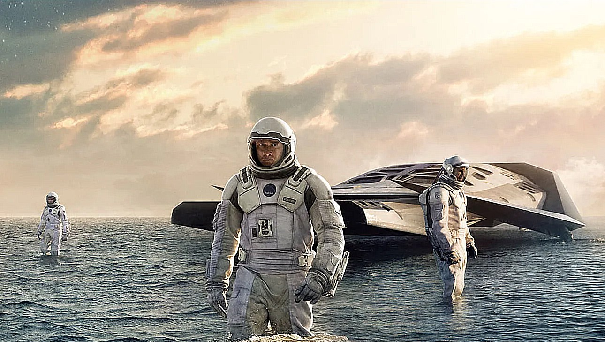

Detailed Analysis of Interstellar

Plot and Summary
In 'Interstellar,' Earth is facing an environmental catastrophe, and a former NASA pilot embarks on a space mission through a wormhole to find new habitable planets for humanity. As he journeys through different dimensions and relativity, he grapples with the passage of time, love, and the survival of the human species.
Scientific Accuracy
"Interstellar" strives for a high level of scientific accuracy in its portrayal of astrophysics and relativity. The film consults with scientific experts and incorporates real scientific concepts, such as wormholes, black holes, and time dilation, to create a visually stunning and scientifically grounded representation of space and time. While some artistic liberties are taken for dramatic effect, the film's commitment to scientific realism is notable and contributes to its immersive storytelling and awe-inspiring visuals, making it a commendable endeavor in merging science and cinema.
Cinematography
"Interstellar" features stunning and visually captivating cinematography by Hoyte van Hoytema, with a focus on showcasing the grandeur of space and celestial bodies. The film employs a combination of practical effects, large-scale models, and digital wizardry to create breathtaking scenes, including a striking representation of a rotating black hole and its gravitational lensing effects. The cinematography captures both the vastness of interstellar space and the emotional depth of the characters, resulting in a visually mesmerizing cinematic experience. Christopher Nolan's collaboration with Hoytema has resulted in a movie that is not only a visual spectacle but also a testament to the power of cinematography in storytelling.
Musical Score
Hans Zimmer's musical score for "Interstellar" is a masterful and emotionally resonant composition that elevates the film's storytelling to new heights. The score is characterized by its haunting organ music, powerful crescendos, and a fusion of electronic and orchestral elements. Zimmer's music expertly underscores the film's themes of love, exploration, and the vast unknown of space, creating a deeply immersive and atmospheric experience. The soundtrack not only complements the visuals but also serves as a narrative force, enhancing the emotional impact of the film and drawing viewers into the epic journey of "Interstellar." It is a musical masterpiece that lingers in the minds of audiences long after the credits roll.